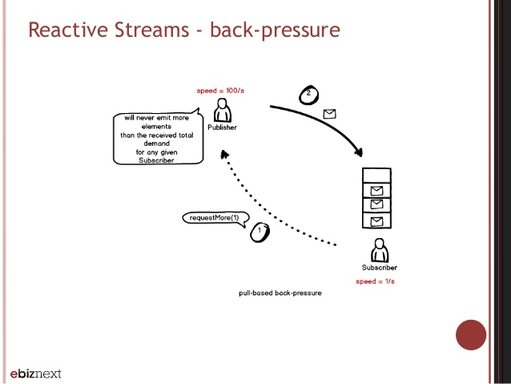
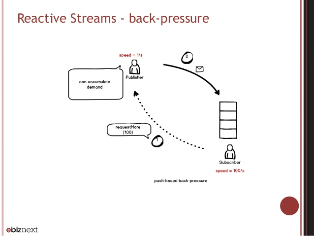

<!DOCTYPE HTML>
<html>
<head><meta name="generator" content="Hexo 3.9.0">
  <meta charset="utf-8">
  <meta http-equiv="X-UA-Compatible" content="IE=edge">
  <meta name="apple-mobile-web-app-capable" content="yes">
  <meta name="apple-mobile-web-app-status-bar-style" content="black">
  <meta name="google-site-verification" content>
  
  <title>响应式编程总览</title>
  <meta name="author" content="Emac">
   <meta name="description" content="引子：被誉为“中国大数据第一人”的涂子沛先生在其成名作《数据之巅》里提到，摩尔定律、社交媒体、数据挖掘是大数据的三大成因。IBM的研究称，整个人类文明所获得的全部数据中，有90%是过去两年内产生的。在此背景下，包括NoSQL，Hadoop, Spark, Storm, Kylin在内的大批新技术应运">
  

  <meta property="og:title" content="响应式编程总览">
  <meta name="viewport" content="width=device-width, initial-scale=1, maximum-scale=1">
  <meta property="og:site_name" content="Emac">
 <meta property="og:image" content="undefined">
  
  <link href="/apple-touch-icon-precomposed.png" sizes="180x180" rel="apple-touch-icon-precomposed">
  <link rel="alternate" href="/atom.xml" title="Emac" type="application/atom+xml">
  <link rel="stylesheet" href="//cdn.bootcss.com/bootstrap/3.3.6/css/bootstrap.min.css">
  <link rel="stylesheet" href="//cdn.bootcss.com/font-awesome/4.5.0/css/font-awesome.min.css">
  <link rel="stylesheet" href="/css/m.min.css">
  <link rel="icon" type="image/x-icon" href="/favicon.ico">
</head>
</html>
<body>
  <div id='wx_pic' style='display:none;'></div>
  <div id="main">
    <div class="behind">
      <div class="back">
        <a href="/" class="black-color"><i class="fa fa-times" aria-hidden="true"></i></a>
      </div>
      <div class="description">
        &nbsp;拾贝
      </div>
    </div>
    <div class="container">
      

  <article class="standard post">
    <div class="title">
      
  
    <h1 class="page-title center">
        响应式编程总览
    </h1>
  


    </div>
    <div class="meta center">
      
<time datetime="2017-06-20T16:00:00.000Z">
  <i class="fa fa-calendar"></i>&nbsp;
  2017-06-21
</time>


    
    &nbsp;
    <i class="fa fa-tag"></i>&nbsp;
    <a href="/categories/backend/">backend</a>


    
    &nbsp;
    <i class="fa fa-tag"></i>&nbsp;
    <a href="/tags/原创/">原创</a>·<a href="/tags/Reactive/">Reactive</a>


    </div>
    <hr>
    <div class="picture-container">
      
    </div>
    <blockquote>
<p>引子：被誉为“中国大数据第一人”的涂子沛先生在其成名作《数据之巅》里提到，摩尔定律、社交媒体、数据挖掘是大数据的三大成因。IBM的研究称，整个人类文明所获得的全部数据中，有90%是过去两年内产生的。在此背景下，包括NoSQL，Hadoop, Spark, Storm, Kylin在内的大批新技术应运而生。其中以<a href="https://github.com/ReactiveX/RxJava" target="_blank" rel="noopener">RxJava</a>和<a href="http://projectreactor.io/" target="_blank" rel="noopener">Reactor</a>为代表的响应式（Reactive）编程技术针对的就是经典的大数据4V定义（Volume，Variety，Velocity，Value）中的Velocity，即高并发问题，而在即将发布的Spring 5中，也引入了响应式编程的支持。在接下来的几周，我会围绕响应式编程分三期与你分享我的一些学习心得。本篇是第二篇，以Reactor框架为例介绍响应式编程的几个关键特性。</p>
<p>前情概要：</p>
<ul>
<li><a href="http://emacoo.cn/backend/spring5-overview/">【Spring 5】响应式Web框架前瞻</a></li>
</ul>
</blockquote>
<h2 id="1-响应式编程总览"><a href="#1-响应式编程总览" class="headerlink" title="1 响应式编程总览"></a>1 响应式编程总览</h2><blockquote>
<p>In computing, reactive programming is an asynchronous programming paradigm concerned with data streams and the propagation of change. - <a href="https://en.wikipedia.org/wiki/Reactive_programming" target="_blank" rel="noopener">Reactive programming - Wikipedia</a></p>
</blockquote>
<p>在上述响应式编程（以下简称RP）的定义中，除了异步编程，还包含两个重要的关键词：</p>
<ul>
<li>Data streams: 即数据流，分为静态数据流（比如数组，文件）和动态数据流（比如事件流，日志流）两种。基于数据流模型，RP得以提供一套统一的Stream风格的数据处理接口。和Java 8中的Stream API相比，RP API除了支持静态数据流，还支持动态数据流，并且允许复用和同时接入多个订阅者。</li>
<li>The propagation of change: 变化传播，简单来说就是以一个数据流为输入，经过一连串操作转化为另一个数据流，然后分发给各个订阅者的过程。这就有点像函数式编程中的组合函数，将多个函数串联起来，把一组输入数据转化为格式迥异的输出数据。</li>
</ul>
<p>一个容易混淆的概念是响应式设计，虽然它的名字中也包含了“响应式”三个字，但其实和RP完全是两码事。响应式设计是指网页能够自动调整布局和样式以适配不同尺寸的屏幕，属于网站设计的范畴，而RP是一种关注系统可响应性，面向数据流的编程思想或者说编程框架。</p>
<h3 id="特性"><a href="#特性" class="headerlink" title="特性"></a>特性</h3><p>从本质上说，RP是一种异步编程框架，和其他框架相比，RP至少包含了以下三个特性：</p>
<ul>
<li>描述而非执行：在你最终调用<code>subscribe()</code>方法之前，从发布端到订阅端，没有任何事会发生。就好比无论多长的水管，只要水龙头不打开，水管里的水就不会流动。为了提高描述能力，RP提供了比Stream丰富的多的多的API，比如<code>buffer()</code>, <code>merge()</code>, <code>onErrorMap()</code>等。</li>
<li>提高吞吐量: 类似于HTTP/2中的连接复用，RP通过线程复用来提高吞吐量。在传统的Servlet容器中，每来一个请求就会发起一个线程进行处理。受限于机器硬件资源，单台服务器所能支撑的线程数是存在一个上限的，假设为T，那么应用同时能处理的请求数（吞吐量）必然也不会超过T。但对于一个使用<a href="http://emacoo.cn/backend/spring5-overview/">Spring 5</a>开发的RP应用，如果运行在像Netty这样的异步容器中，无论有多少个请求，用于处理请求的线程数是相对固定的，因此最大吞吐量就有可能超过T。</li>
<li>背压（Backpressure）支持：简单来说，背压就是一种反馈机制。在一般的Push模型中，发布者既不知道也不关心订阅者的处理速度，当数据的发布速度超过处理速度时，需要订阅者自己决定是缓存还是丢弃。如果使用RP，决定权就交回给发布者，订阅者只需要根据自己的处理能力问发布者请求相应数量的数据。你可能会问这不就是Pull模型吗？其实是不同的。在Pull模型中，订阅者每次处理完数据，都要重新发起一次请求拉取新的数据，而使用背压，订阅者只需要发起一次请求，就能连续不断的重复请求数据。</li>
</ul>
<h3 id="适用场景"><a href="#适用场景" class="headerlink" title="适用场景"></a>适用场景</h3><p>了解了RP的这些特性，你可能已经猜想到RP有哪些适用场景了。一般来说，RP适用于高并发、带延迟操作的场景，比如以下这些情况（的组合）：</p>
<ul>
<li>一次请求涉及多次外部服务调用</li>
<li>非可靠的网络传输</li>
<li>高并发下的消息处理</li>
<li>弹性计算网络</li>
</ul>
<h3 id="代价"><a href="#代价" class="headerlink" title="代价"></a>代价</h3><blockquote>
<p>Every coin has two sides.</p>
</blockquote>
<p>和任何框架一样，有优势必然就有劣势。RP的两个比较大的问题是：</p>
<ul>
<li>虽然复用线程有助于提高吞吐量，但一旦在某个回调函数中线程被卡住，那么这个线程上所有的请求都会被阻塞，最严重的情况，整个应用会被拖垮。</li>
<li>难以调试。由于RP强大的描述能力，在一个典型的RP应用中，大部分代码都是以链式表达式的形式出现，比如<code>flux.map(String::toUpperCase).doOnNext(s -&gt; LOG.info(&quot;UC String {}&quot;, s)).next().subscribe()</code>，一旦出错，你将很难定位到具体是哪个环节出了问题。所幸的是，RP框架一般都会提供一些工具方法来辅助进行调试。</li>
</ul>
<h2 id="2-Reactor实战"><a href="#2-Reactor实战" class="headerlink" title="2 Reactor实战"></a>2 Reactor实战</h2><p>为了帮助你理解上面说的一些概念，下面我就通过几个测试用例，演示RP的两个关键特性：提高吞吐量和背压。完整的代码可参见我GitHub上的<a href="https://github.com/emac/demo-reactor" target="_blank" rel="noopener">示例工程</a>。</p>
<h3 id="提高吞吐量"><a href="#提高吞吐量" class="headerlink" title="提高吞吐量"></a>提高吞吐量</h3><figure class="highlight java"><table><tr><td class="gutter"><pre><span class="line">1</span><br><span class="line">2</span><br><span class="line">3</span><br><span class="line">4</span><br><span class="line">5</span><br><span class="line">6</span><br><span class="line">7</span><br><span class="line">8</span><br><span class="line">9</span><br><span class="line">10</span><br><span class="line">11</span><br><span class="line">12</span><br><span class="line">13</span><br><span class="line">14</span><br><span class="line">15</span><br><span class="line">16</span><br><span class="line">17</span><br><span class="line">18</span><br><span class="line">19</span><br><span class="line">20</span><br><span class="line">21</span><br><span class="line">22</span><br><span class="line">23</span><br><span class="line">24</span><br><span class="line">25</span><br></pre></td><td class="code"><pre><span class="line"><span class="meta">@Test</span></span><br><span class="line"><span class="function"><span class="keyword">public</span> <span class="keyword">void</span> <span class="title">testImperative</span><span class="params">()</span> <span class="keyword">throws</span> InterruptedException </span>&#123;</span><br><span class="line">    _runInParallel(CONCURRENT_SIZE, () -&gt; &#123;</span><br><span class="line">        ImperativeRestaurantRepository.INSTANCE.insert(load);</span><br><span class="line">    &#125;);</span><br><span class="line">&#125;</span><br><span class="line"></span><br><span class="line"><span class="function"><span class="keyword">private</span> <span class="keyword">void</span> <span class="title">_runInParallel</span><span class="params">(<span class="keyword">int</span> nThreads, Runnable task)</span> <span class="keyword">throws</span> InterruptedException </span>&#123;</span><br><span class="line">    ExecutorService executorService = Executors.newFixedThreadPool(nThreads);</span><br><span class="line">    <span class="keyword">for</span> (<span class="keyword">int</span> i = <span class="number">0</span>; i &lt; nThreads; i++) &#123;</span><br><span class="line">        executorService.submit(task);</span><br><span class="line">    &#125;</span><br><span class="line">    executorService.shutdown();</span><br><span class="line">    executorService.awaitTermination(<span class="number">1</span>, TimeUnit.MINUTES);</span><br><span class="line">&#125;</span><br><span class="line"></span><br><span class="line"><span class="meta">@Test</span></span><br><span class="line"><span class="function"><span class="keyword">public</span> <span class="keyword">void</span> <span class="title">testReactive</span><span class="params">()</span> <span class="keyword">throws</span> InterruptedException </span>&#123;</span><br><span class="line">    CountDownLatch latch = <span class="keyword">new</span> CountDownLatch(CONCURRENT_SIZE);</span><br><span class="line">    <span class="keyword">for</span> (<span class="keyword">int</span> i = <span class="number">0</span>; i &lt; CONCURRENT_SIZE; i++) &#123;</span><br><span class="line">        ReactiveRestaurantRepository.INSTANCE.insert(load).subscribe(s -&gt; &#123;</span><br><span class="line">        &#125;, e -&gt; latch.countDown(), latch::countDown);</span><br><span class="line">    &#125;</span><br><span class="line">    latch.await();</span><br><span class="line">&#125;</span><br></pre></td></tr></table></figure>
<p>用例解读：</p>
<ul>
<li>第一个测试用例使用的是多线程+MongoDB Driver，同时起100个线程，每个线程往MongoDB中插入10000条数据，总共100万条数据，平均用时15秒左右。</li>
<li>第二个测试用例使用的是Reactor+MongoDB Reactive Streams Driver，同样是插入100万条数据，平均用时不到10秒，吞吐量提高了50%！</li>
</ul>
<h3 id="背压"><a href="#背压" class="headerlink" title="背压"></a>背压</h3><p>在演示测试用例之前，先看两张图，帮助你更形象的理解什么是背压。</p>
<p></p>
<p></p>
<p><em>图片出处：<a href="https://www.slideshare.net/StephaneManciot/psug-52-dataflow-and-simplified-reactive-programming-with-akkastreams" target="_blank" rel="noopener">Dataflow and simplified reactive programming</a></em></p>
<p>两张图乍一看没啥区别，但其实是完全两种不同的背压策略。第一张图，发布速度（100/s）远大于订阅速度（1/s），但由于背压的关系，发布者严格按照订阅者的请求数量发送数据。第二张图，发布速度（1/s）小于订阅速度（100/s），当订阅者请求100个数据时，发布者会积满所需个数的数据再开始发送。可以看到，通过背压机制，发布者可以根据各个订阅者的能力动态调整发布速度。</p>
<figure class="highlight java"><table><tr><td class="gutter"><pre><span class="line">1</span><br><span class="line">2</span><br><span class="line">3</span><br><span class="line">4</span><br><span class="line">5</span><br><span class="line">6</span><br><span class="line">7</span><br><span class="line">8</span><br><span class="line">9</span><br><span class="line">10</span><br><span class="line">11</span><br><span class="line">12</span><br><span class="line">13</span><br><span class="line">14</span><br><span class="line">15</span><br><span class="line">16</span><br><span class="line">17</span><br><span class="line">18</span><br><span class="line">19</span><br><span class="line">20</span><br><span class="line">21</span><br><span class="line">22</span><br><span class="line">23</span><br><span class="line">24</span><br><span class="line">25</span><br><span class="line">26</span><br><span class="line">27</span><br><span class="line">28</span><br><span class="line">29</span><br><span class="line">30</span><br><span class="line">31</span><br><span class="line">32</span><br><span class="line">33</span><br><span class="line">34</span><br><span class="line">35</span><br><span class="line">36</span><br><span class="line">37</span><br><span class="line">38</span><br><span class="line">39</span><br><span class="line">40</span><br><span class="line">41</span><br><span class="line">42</span><br><span class="line">43</span><br><span class="line">44</span><br><span class="line">45</span><br><span class="line">46</span><br><span class="line">47</span><br><span class="line">48</span><br><span class="line">49</span><br><span class="line">50</span><br><span class="line">51</span><br><span class="line">52</span><br><span class="line">53</span><br><span class="line">54</span><br><span class="line">55</span><br><span class="line">56</span><br><span class="line">57</span><br><span class="line">58</span><br><span class="line">59</span><br><span class="line">60</span><br><span class="line">61</span><br></pre></td><td class="code"><pre><span class="line"><span class="meta">@BeforeEach</span></span><br><span class="line"><span class="function"><span class="keyword">public</span> <span class="keyword">void</span> <span class="title">beforeEach</span><span class="params">()</span> </span>&#123;</span><br><span class="line">    <span class="comment">// initialize publisher</span></span><br><span class="line">    AtomicInteger count = <span class="keyword">new</span> AtomicInteger();</span><br><span class="line">    timerPublisher = Flux.create(s -&gt;</span><br><span class="line">            <span class="keyword">new</span> Timer().schedule(<span class="keyword">new</span> TimerTask() &#123;</span><br><span class="line">                <span class="meta">@Override</span></span><br><span class="line">                <span class="function"><span class="keyword">public</span> <span class="keyword">void</span> <span class="title">run</span><span class="params">()</span> </span>&#123;</span><br><span class="line">                    s.next(count.getAndIncrement());</span><br><span class="line">                    <span class="keyword">if</span> (count.get() == <span class="number">10</span>) &#123;</span><br><span class="line">                        s.complete();</span><br><span class="line">                    &#125;</span><br><span class="line">                &#125;</span><br><span class="line">            &#125;, <span class="number">100</span>, <span class="number">100</span>)</span><br><span class="line">    );</span><br><span class="line">&#125;</span><br><span class="line"></span><br><span class="line"><span class="meta">@Test</span></span><br><span class="line"><span class="function"><span class="keyword">public</span> <span class="keyword">void</span> <span class="title">testNormal</span><span class="params">()</span> <span class="keyword">throws</span> InterruptedException </span>&#123;</span><br><span class="line">    CountDownLatch latch = <span class="keyword">new</span> CountDownLatch(<span class="number">1</span>);</span><br><span class="line">    timerPublisher</span><br><span class="line">            .subscribe(r -&gt; System.out.println(<span class="string">"Continuous consuming "</span> + r),</span><br><span class="line">                    e -&gt; latch.countDown(),</span><br><span class="line">                    latch::countDown);</span><br><span class="line">    latch.await();</span><br><span class="line">&#125;</span><br><span class="line"></span><br><span class="line"><span class="meta">@Test</span></span><br><span class="line"><span class="function"><span class="keyword">public</span> <span class="keyword">void</span> <span class="title">testBackpressure</span><span class="params">()</span> <span class="keyword">throws</span> InterruptedException </span>&#123;</span><br><span class="line">    CountDownLatch latch = <span class="keyword">new</span> CountDownLatch(<span class="number">1</span>);</span><br><span class="line">    AtomicReference&lt;Subscription&gt; timerSubscription = <span class="keyword">new</span> AtomicReference&lt;&gt;();</span><br><span class="line">    Subscriber&lt;Integer&gt; subscriber = <span class="keyword">new</span> BaseSubscriber&lt;Integer&gt;() &#123;</span><br><span class="line">        <span class="meta">@Override</span></span><br><span class="line">        <span class="function"><span class="keyword">protected</span> <span class="keyword">void</span> <span class="title">hookOnSubscribe</span><span class="params">(Subscription subscription)</span> </span>&#123;</span><br><span class="line">            timerSubscription.set(subscription);</span><br><span class="line">        &#125;</span><br><span class="line"></span><br><span class="line">        <span class="meta">@Override</span></span><br><span class="line">        <span class="function"><span class="keyword">protected</span> <span class="keyword">void</span> <span class="title">hookOnNext</span><span class="params">(Integer value)</span> </span>&#123;</span><br><span class="line">            System.out.println(<span class="string">"consuming "</span> + value);</span><br><span class="line">        &#125;</span><br><span class="line"></span><br><span class="line">        <span class="meta">@Override</span></span><br><span class="line">        <span class="function"><span class="keyword">protected</span> <span class="keyword">void</span> <span class="title">hookOnComplete</span><span class="params">()</span> </span>&#123;</span><br><span class="line">            latch.countDown();</span><br><span class="line">        &#125;</span><br><span class="line"></span><br><span class="line">        <span class="meta">@Override</span></span><br><span class="line">        <span class="function"><span class="keyword">protected</span> <span class="keyword">void</span> <span class="title">hookOnError</span><span class="params">(Throwable throwable)</span> </span>&#123;</span><br><span class="line">            latch.countDown();</span><br><span class="line">        &#125;</span><br><span class="line">    &#125;;</span><br><span class="line">    timerPublisher.onBackpressureDrop().subscribe(subscriber);</span><br><span class="line">    <span class="keyword">new</span> Timer().schedule(<span class="keyword">new</span> TimerTask() &#123;</span><br><span class="line">        <span class="meta">@Override</span></span><br><span class="line">        <span class="function"><span class="keyword">public</span> <span class="keyword">void</span> <span class="title">run</span><span class="params">()</span> </span>&#123;</span><br><span class="line">            timerSubscription.get().request(<span class="number">1</span>);</span><br><span class="line">        &#125;</span><br><span class="line">    &#125;, <span class="number">100</span>, <span class="number">200</span>);</span><br><span class="line">    latch.await();</span><br><span class="line">&#125;</span><br></pre></td></tr></table></figure>
<p>用例解读：</p>
<ul>
<li>第一个测试用例演示了在理想情况下，即订阅者的处理速度能够跟上发布者的发布速度（以100ms为间隔产生10个数字），控制台从0打印到9，一共10个数字，和发布端一致。</li>
<li>第二个测试用例故意调慢了订阅者的处理速度（每200ms处理一个数字），同时发布者采用了Drop的背压策略，结果控制台只打印了一半的数字（0，2，4，6，8），另外一半的数字由于背压的原因被发布者Drop掉了，并没有发给订阅者。</li>
</ul>
<h2 id="3-小结"><a href="#3-小结" class="headerlink" title="3 小结"></a>3 小结</h2><p>通过上面的介绍，不难看出RP实际上是一种内置了发布者订阅者模型的异步编程框架，包含了线程复用，背压等高级特性，特别适用于高并发、有延迟的场景。</p>
<p>以上就是我对响应式编程的一些简单介绍，欢迎你到我的<a href="https://github.com/emac/emac.github.io/issues/2" target="_blank" rel="noopener">留言板</a>分享，和大家一起过过招。下一篇我将综合前两篇的内容，详解一个完整的Spring 5示例应用，敬请期待。</p>
<h2 id="4-参考"><a href="#4-参考" class="headerlink" title="4 参考"></a>4 参考</h2><ul>
<li><a href="https://spring.io/blog/2016/04/19/understanding-reactive-types" target="_blank" rel="noopener">Understanding Reactive types</a></li>
<li><a href="https://www.slideshare.net/SpringCentral/designing-implementing-and-using-reactive-apis" target="_blank" rel="noopener">Designing, Implementing, and Using Reactive APIs</a></li>
<li><a href="https://www.slideshare.net/SpringCentral/imperative-to-reactive-web-applications" target="_blank" rel="noopener">Imperative to Reactive Web Applications</a></li>
</ul>


  </article>
  </script>
    <script async src="https://dn-lbstatics.qbox.me/busuanzi/2.3/busuanzi.pure.mini.js">
  </script>
  <div class="busuanzi center">
    页阅读量:&nbsp;<span id="busuanzi_value_page_pv"></span>&nbsp;・&nbsp;
    站访问量:&nbsp;<span id="busuanzi_value_site_pv"></span>&nbsp;・&nbsp;
    站访客数:&nbsp;<span id="busuanzi_value_site_uv"></span>
  </div>


    </div>
  </div>
  <footer class="page-footer"><div class="clearfix">
</div>
<div class="right-foot container">
    <div class="firstrow">
        <a href="#top" >
        <i class="fa fa-arrow-right"></i>
        </a>
        © emacoo.cn 2015-2020
    </div>
    <div class="secondrow">
        <a href="https://github.com/gaoryrt/hexo-theme-pln">
        
        </a>
    </div>
</div>
<div class="clearfix">
</div>
</footer>
  <script src="//cdn.bootcss.com/jquery/2.2.1/jquery.min.js"></script>
<script src="/js/search.js"></script>
<script type="text/javascript">

// comments below to disable loading animation
function revealOnScroll() {
  var scrolled = $(window).scrollTop();
  $(".excerpt, .index-title, .index-meta, p").each(function() {
    var current = $(this),
      height = $(window).outerHeight(),
      offsetTop = current.offset().top;
    (scrolled + height + 50 > offsetTop) ? current.addClass("animation"):'';
  });
}
$(window).on("scroll", revealOnScroll);
$(document).ready(revealOnScroll)

// disqus scripts


// dropdown scripts
$(".dropdown").click(function(event) {
  var current = $(this);
  event.stopPropagation();
  $(current).children(".dropdown-content")[($(current).children(".dropdown-content").hasClass("open"))?'removeClass':'addClass']("open")
});
$(document).click(function(){
    $(".dropdown-content").removeClass("open");
})

// back to top scripts
$("a[href='#top']").click(function() {
  $("html, body").animate({ scrollTop: 0 }, 500);
  return false;
});


var path = "/search.xml";
searchFunc(path, 'local-search-input', 'local-search-result');

</script>

</body>
</html>
